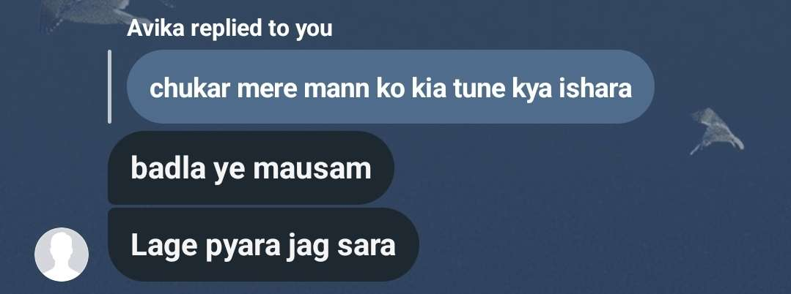
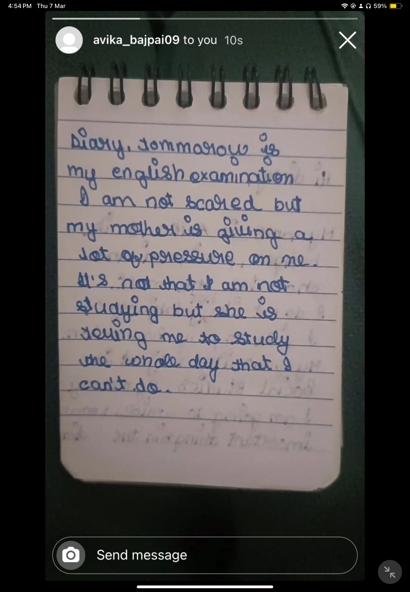
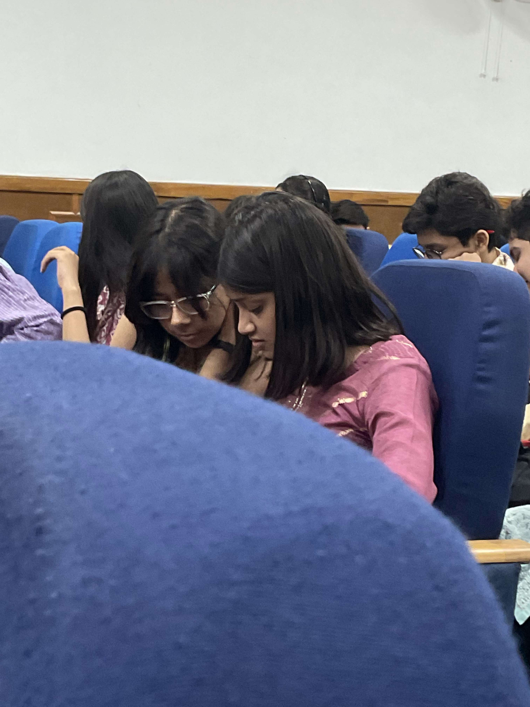
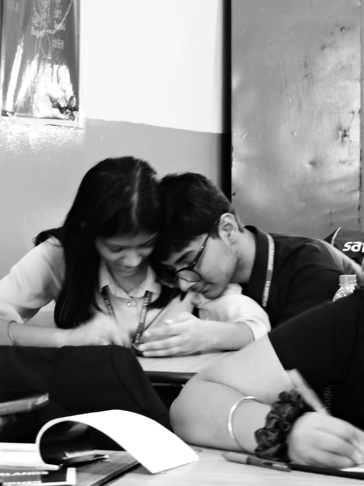

Me & Guni 💗
✨ 20th February
The day Arush added you and I saw, "Oh, a girl named Avika Bajpai exists." I was so annoying back then — I bugged you and everyone. I felt like everyone hated me. You used to talk to Arush, and that was okay until I started liking you. I remember when you first replied to me when I was texting Kishore Kumar lyrics, and you replied singing along. OMG, I blushed so hard, like SO hard. I love you, baby, and I’m forever thankful to you. I don’t know what I’d do if I lost you. Give boards and come back fast.
🌸 7th March
Oh god, I remember not on 7th but on 6th we did the Taylor Swift thing and THE FIRST REEL YOU SENT OMG — the club penguin one. I love you so much! I went out with Anshaj on the 6th, and I kept texting you. Thanks, Avika, for that time because I was going through so much, and you made it better. I was so thankful. I remember you geeking about books, and I just knew she’s the one I wanna get with. So thanks, Avika, for awkwardly saying, “Kya tumhe mujhe date karna hai?” I love you.
📍 27th April
Oh god, this day was chaotic, but seeing you in the opening ceremony made me feel, "Okay, I have a girlfriend who is pretty." But yeah, I felt bad when I toured the whole school to find you. I was jealous of Aua. I looked like shit, never looked nice. I don’t deserve you, but thanks for staying with me and never making me feel not enough. Thank you.
🍽️ 13th-14th July
When I went to the restaurant to see you and blushed SO HARD, BRO, I LOVE YOU! You’re so pretty. I liked that day — I love the days when I see you, when I get babied, when I got photos. Thank you, baby.

🌟 22nd, 23rd, 24th October
Whatever I say about these days is less. Oh god, what I would do to go through them again. I first saw you, and then we went to sit, and I wanted to freeze the moment. I love you, baby. When we sat and I opened snacks, we held hands — BEST THING THAT EVER HAPPENED TO ME. I WAS ON TOP OF THE WORLD. Then you sitting on the right, I don't know... I love you. If I want anyone on my right, it would be you always. No one compares. You missed my birthday, and that's fine because I'll forgive you always, but let's be on topic. The first day I HELD YOU, YAYAYAYAYAYAYA! You looked so nice in that blue shirt, bro, love you. Then, on the second day, I was the luckiest guy there. I love you, baby. YOU IN THAT KURTA... and then, of course, the best day of my life — the last day. So many firsts. We kissed each other and hugged. THAT HUG... I would die to have that hug again. I love you, and I always will. So please don't lose your baby, because he will definitely fall apart. Now, bye, and enjoy talking to me instead of reading this. We have our lives to spend together.
More memories to be added... because this story's still being written.